คู่มือใช้งานเครื่องมือ · ระดับ Free
ประเมินตนเองระบบไอน้ำ
Steam System Scoping
FREE
สำหรับผู้ดูแลระบบไอน้ำและช่างเทคนิค — อ่านแล้วทำตามได้เอง
ใช้เวลาฝึกประมาณ 45 นาที
เคสตัวอย่าง: โรงงาน A ฟอกย้อมสิ่งทอ หม้อไอน้ำรวม 12 ตัน/ชม. (ข้อมูลสมมุติ)
อ.หนึ่ง กลับทวี / Aj. Nueng Klubtavee
tripleeenergytools.com
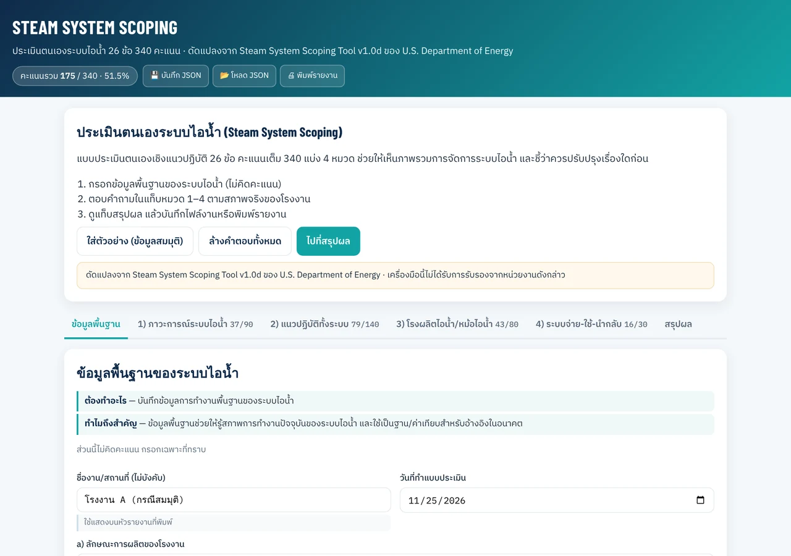
หน้าจอเครื่องมือ — เปิดได้จากเมนู Free ของเว็บไซต์
รุ่นเครื่องมือ: Free commit 7de2a92 · จับภาพ 25 พ.ย. 2569 · คู่มือ Rev01
เครื่องมือนี้ใช้ทำอะไร และไม่ได้ทำอะไร
คู่มือใช้งาน · ประเมินตนเองระบบไอน้ำ (Steam System Scoping) · ระดับ Free
2 / 35
| ใช้ทำได้ | ไม่ได้ทำ |
|---|---|
| ประเมินแนวปฏิบัติการจัดการระบบไอน้ำของโรงงานเอง | ไม่ใช่การตรวจวัด — ไม่มีการวัดหรือคำนวณพลังงาน |
| ให้คะแนน 26 ข้อ · คะแนนเต็ม 340 · แบ่ง 4 หมวด | ไม่บอกว่าประหยัดได้กี่บาทหรือกี่ตันไอน้ำ |
| เรียงจุดที่ควรปรับปรุงก่อนตามคะแนนที่เสีย | ไม่มีเกณฑ์ผ่าน/ไม่ผ่าน หรือระดับ "ดี/พอใช้" |
| ลิงก์ไปเครื่องมือ Free ที่ใช้ประเมินเชิงตัวเลขต่อ | ไม่ใช่การรับรองจาก U.S. DOE |
| บันทึกไฟล์งาน JSON และพิมพ์รายงาน | ไม่ตรวจว่าคำตอบตรงกับสภาพจริง — ผู้ตอบรับผิดชอบ |
💡 เคล็ดลับ
ใช้เป็นจุดเริ่มก่อนตรวจวัดจริง: รู้ว่าเรื่องไหนอ่อน แล้วค่อยวัดและคำนวณด้วยเครื่องมือเชิงตัวเลข
แผนที่หน้าจอ
คู่มือใช้งาน · ประเมินตนเองระบบไอน้ำ (Steam System Scoping) · ระดับ Free
3 / 35
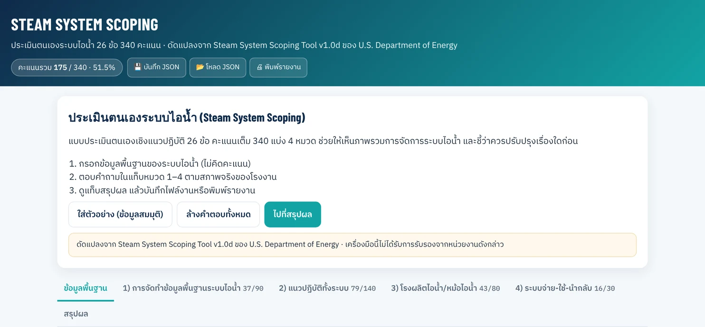
1
2
3
4
5
6
1
คะแนนรวม ปัจจุบัน (อัปเดตทันทีที่ตอบ)
2
บันทึก JSON · โหลด JSON · พิมพ์รายงาน
3
ลำดับการใช้ 3 ขั้น
4
ปุ่ม ใส่ตัวอย่าง · ล้างคำตอบทั้งหมด · ไปที่สรุปผล
5
แท็บ ข้อมูลพื้นฐาน → หมวด 1–4 (คะแนน/เต็ม) → สรุปผล
6
ที่มา: ดัดแปลงจาก Steam System Scoping Tool v1.0d ของ U.S. DOE
💡 เคล็ดลับ
ตัวเลขท้ายชื่อแท็บ เช่น 37/90 คือคะแนนที่ได้/คะแนนเต็มของหมวดนั้น — ดูความคืบหน้าได้โดยไม่ต้องเปิดสรุปผล
เปิดบนมือถือ และสลับภาษา
คู่มือใช้งาน · ประเมินตนเองระบบไอน้ำ (Steam System Scoping) · ระดับ Free
4 / 35
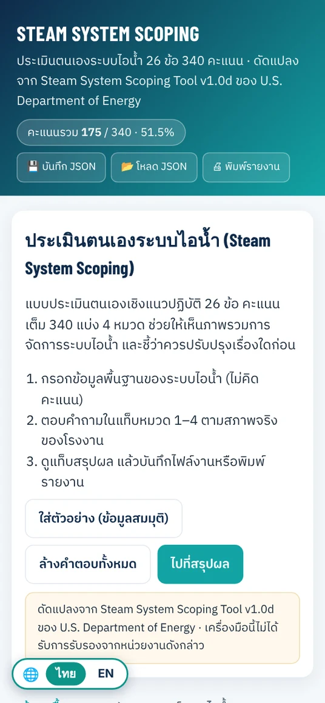
บนมือถือหน้าจอเรียงเป็นคอลัมน์เดียว แท็บขึ้นหลายบรรทัด แตะเลือกได้
ตัวเลือกทุกข้อเป็นแถวกว้าง แตะที่ข้อความได้ ไม่ต้องแตะวงกลมเล็ก ๆ
ปุ่ม ไทย | EN ลอยอยู่ด้านล่าง — สลับภาษาแล้วคำตอบที่เลือกไว้ไม่หาย
💡 เคล็ดลับ
เดินตอบหน้างานด้วยมือถือได้ แล้วกด บันทึก JSON เก็บไว้เปิดต่อบนคอมพิวเตอร์
โครงสร้างแบบประเมิน: 4 หมวด 16 หัวข้อ 26 ข้อ
คู่มือใช้งาน · ประเมินตนเองระบบไอน้ำ (Steam System Scoping) · ระดับ Free
5 / 35
| หมวด (ชื่อแท็บ) | ตัวอย่างหัวข้อ | หัวข้อ | ข้อ | คะแนนเต็ม |
|---|---|---|---|---|
| 1) การจัดทำข้อมูลพื้นฐานระบบไอน้ำ | ต้นทุนไอน้ำ · ค่าเทียบไอน้ำต่อผลิตภัณฑ์ · การตรวจวัด | 3 | 6 | 90 |
| 2) แนวปฏิบัติทั้งระบบ | กับดักไอน้ำ · ปรับสภาพน้ำ · ฉนวน · ไอน้ำรั่ว · Water Hammer | 6 | 9 | 140 |
| 3) โรงผลิตไอน้ำ/หม้อไอน้ำ | ประสิทธิภาพหม้อไอน้ำ · นำความร้อนกลับ · ไอน้ำแห้ง | 4 | 8 | 80 |
| 4) ระบบจ่าย-ใช้-นำกลับ | ลดความดัน (PRV) · คอนเดนเสทกลับ · ไอน้ำแฟลช | 3 | 3 | 30 |
| รวม | 16 | 26 | 340 |
ชื่อเต็มหมวด 1 บนหัวหมวดและสรุปผล: การจัดทำข้อมูลพื้นฐานระบบไอน้ำ (Steam System Profiling) ตามชื่อหมวดของต้นฉบับ DOE
แต่ละหัวข้อมีกล่อง ต้องทำอะไร และ ทำไมถึงสำคัญ (กดเปิดได้) ก่อนคำถาม
แท็บ ข้อมูลพื้นฐาน ไม่คิดคะแนน — ใช้บันทึกสภาพระบบไว้เทียบในอนาคต
⚠️ ระวัง
หมวด 2 มีคะแนนเต็มมากที่สุด (140) — ร้อยละรวมขึ้นกับหมวดนี้มาก อ่านผลรายหมวดด้วยเสมอ
วิธีคิดคะแนนของเครื่องมือ
คู่มือใช้งาน · ประเมินตนเองระบบไอน้ำ (Steam System Scoping) · ระดับ Free
6 / 35
| ชนิดคำถาม | หน้าตา | คะแนนข้อนั้น |
|---|---|---|
| เลือกหนึ่งคำตอบ (ส่วนใหญ่) | วงกลม ◉ — ป้าย "(เลือกหนึ่งคำตอบ)" | คะแนนของตัวเลือกที่เลือก (ตัวเลขท้ายแถว) |
| เลือกได้หลายรายการ (MS1 ST1 MN1 BE2 HR1) | ช่องสี่เหลี่ยม ☑ — ท้ายรายการมีคำว่า "ใช่" | ผลรวมของรายการที่ติ๊ก |
| ช่อง "ไม่ได้…ทุกข้อ" | ช่องสี่เหลี่ยมตัวสุดท้าย (ตัวเอียง) | 0 คะแนน — ติ๊กแล้วล้างรายการอื่นของข้อนั้น |
| ยังไม่ตอบ | กล่องคำถามไม่มีกรอบสีเขียว | นับ 0 คะแนน และแจ้งจำนวนข้อที่ยังไม่ตอบในสรุปผล |
| ร้อยละ | แสดงทศนิยม 1 ตำแหน่ง | คะแนนที่ได้ ÷ คะแนนเต็ม × 100 (รายหมวดและรวม) |
⚠️ ระวัง
เครื่องมือไม่มีเกณฑ์แปลผลช่วงคะแนน (ต้นฉบับไม่มี) — สีของแถบในสรุปผลใช้ช่วยอ่านเท่านั้น
คำศัพท์ที่พบในแบบประเมิน
คู่มือใช้งาน · ประเมินตนเองระบบไอน้ำ (Steam System Scoping) · ระดับ Free
7 / 35
| คำ | ความหมายแบบสั้น |
|---|---|
| ค่าเทียบไอน้ำต่อผลิตภัณฑ์ | kg ไอน้ำที่ใช้ ต่อหน่วยผลิตภัณฑ์ (Steam/Product Benchmark) |
| โบลว์ดาวน์ (Blowdown) | การระบายน้ำในหม้อไอน้ำทิ้งบางส่วน เพื่อคุมความเข้มข้นของสารละลาย |
| TDS / ค่าการนำไฟฟ้า | ของแข็งละลายทั้งหมดในน้ำหม้อไอน้ำ — ใช้กำหนดอัตราโบลว์ดาวน์ |
| PRV | วาล์วลดความดัน (Pressure Reducing Valve) |
| ไอน้ำแฟลช (Flash steam) | ไอที่เกิดเมื่อคอนเดนเสทร้อนความดันสูงลดความดันลง |
| อีโคโนไมเซอร์ | อุปกรณ์ใช้ความร้อนก๊าซไอเสียอุ่นน้ำป้อน |
| Water Hammer (ค้อนน้ำ) | เสียงกระแทกในท่อจากน้ำ/คอนเดนเสทค้างในท่อไอน้ำ |
| ไอน้ำแห้ง | ไอน้ำที่ไม่มีหยดน้ำปน — ตรวจคุณภาพไอน้ำที่ออกจากหม้อไอน้ำ |
💡 เคล็ดลับ
ข้อความ ต้องทำอะไร / ทำไมถึงสำคัญ ในแต่ละหัวข้อของเครื่องมือ อธิบายเรื่องเหล่านี้ไว้แล้ว — อ่านก่อนตอบ
เตรียมก่อนเริ่ม: ใครตอบ และใช้ข้อมูลอะไร
คู่มือใช้งาน · ประเมินตนเองระบบไอน้ำ (Steam System Scoping) · ระดับ Free
8 / 35
| เรื่อง | ข้อมูล/ผู้ที่ควรถาม | โรงงาน A (ข้อมูลสมมุติ) |
|---|---|---|
| ไอน้ำที่ผลิตทั้งปี · ชั่วโมงเดิน | บันทึกการเดินหม้อไอน้ำ · มาตรวัดไอน้ำ | 36,000 ตัน/ปี · 7,200 ชม./ปี |
| กำลังผลิตรวม · อัตราเฉลี่ย | ป้ายชื่อหม้อไอน้ำ · บันทึกการเดินเครื่อง | 12 ตัน/ชม. · เฉลี่ย 5 ตัน/ชม. |
| สัดส่วนเชื้อเพลิง (ตามพลังงาน) | บัญชีเชื้อเพลิง × ค่าความร้อน | ชีวมวล 80 % · น้ำมันเตา 20 % |
| กับดักไอน้ำ · โบลว์ดาวน์ | ทะเบียนกับดักไอน้ำ · ผลวิเคราะห์น้ำ | 250 ตัว · 6 % ของน้ำป้อน |
| คำตอบหมวด 1–4 | หัวหน้าหม้อไอน้ำ ฝ่ายซ่อมบำรุง ฝ่ายผลิต | ตอบร่วมกัน 3 ฝ่าย |
⚠️ ระวัง
ตอบตามสิ่งที่ทำอยู่จริงและมีหลักฐาน ไม่ใช่สิ่งที่ตั้งใจจะทำ — ไม่อย่างนั้นคะแนนสูงเกินจริงและพลาดจุดที่ควรปรับปรุง
ขั้นที่ 1
ข้อมูลพื้นฐาน a)–e) (ไม่คิดคะแนน)
คู่มือใช้งาน · ประเมินตนเองระบบไอน้ำ (Steam System Scoping) · ระดับ Free
9 / 35
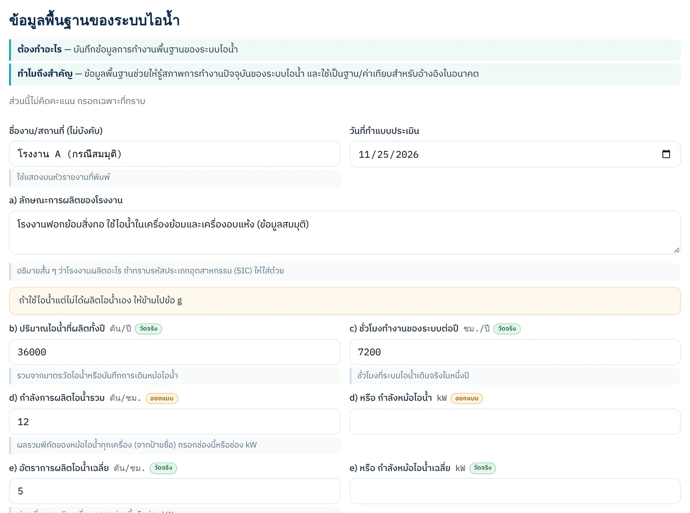
1
2
3
4
5
6
7
1
ชื่องาน/สถานที่ — ขึ้นบนหัวรายงานที่พิมพ์
2
a) ลักษณะการผลิต
3
ไม่ได้ผลิตไอน้ำเอง → ข้ามไปข้อ g
4
b) ไอน้ำที่ผลิตทั้งปี = 36000 ตัน/ปี
5
c) ชั่วโมงทำงาน = 7200 ชม./ปี
6
d) กำลังผลิตรวม = 12 ตัน/ชม.
7
e) อัตราเฉลี่ย = 5 ตัน/ชม.
ป้าย วัดจริง / ออกแบบ บอกว่าค่านั้นควรมาจากบันทึกการวัดหรือป้ายชื่อ (ช่องสัดส่วนเชื้อเพลิงใช้ป้าย ข้อมูลโรงงาน — สไลด์ถัดไป)
ข้อ d) และ e) กรอกเป็น ตัน/ชม. หรือ kW อย่างใดอย่างหนึ่ง
💡 เคล็ดลับ
ตรวจความสอดคล้อง: 5 ตัน/ชม. × 7,200 ชม. = 36,000 ตัน/ปี — ตัวเลขพื้นฐานควรเข้ากันได้
ขั้นที่ 1
ข้อมูลพื้นฐาน f)–j): เชื้อเพลิง เครื่องจักรความร้อน กับดักไอน้ำ
คู่มือใช้งาน · ประเมินตนเองระบบไอน้ำ (Steam System Scoping) · ระดับ Free
10 / 35
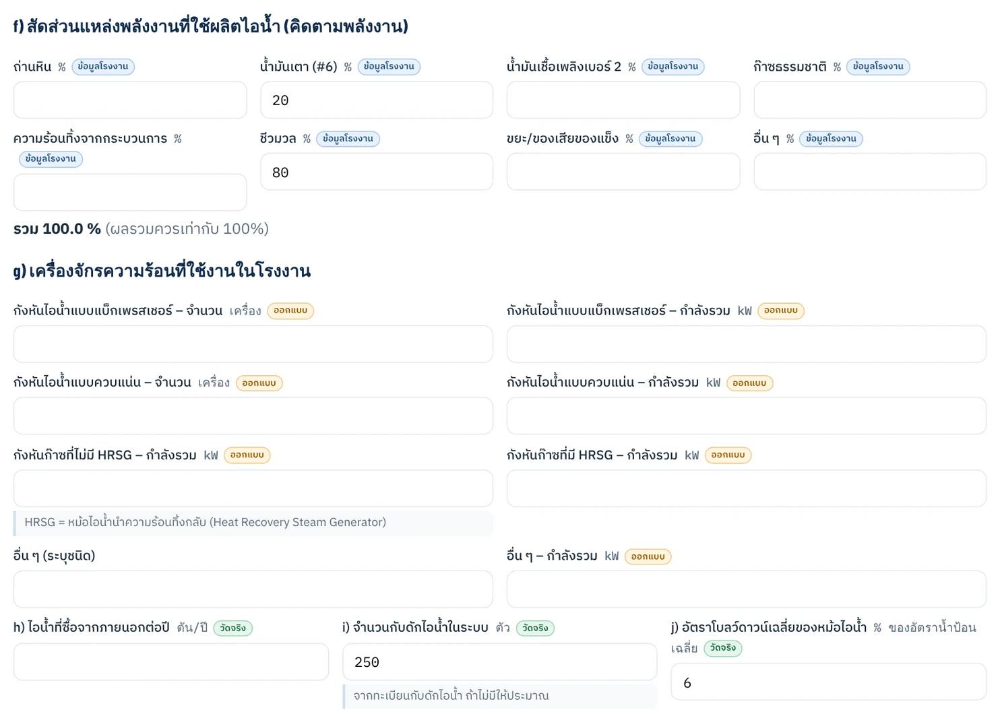
1
2
3
4
5
6
1
น้ำมันเตา (#6) = 20 %
2
ชีวมวล = 80 %
3
ผลรวม = 100.0 %
4
g) กังหันไอน้ำ/กังหันก๊าซ — โรงงาน A ไม่มี เว้นว่าง
5
i) กับดักไอน้ำ 250 ตัว
6
j) โบลว์ดาวน์เฉลี่ย 6 % ของน้ำป้อน
สัดส่วนเชื้อเพลิงคิดตามพลังงาน ไม่ใช่ตามน้ำหนักหรือปริมาตร
ป้าย ข้อมูลโรงงาน (สีฟ้า) ที่ 8 ช่องเชื้อเพลิง = ตัวเลขจากบัญชีเชื้อเพลิงของโรงงาน ไม่ใช่ค่าที่อ่านจากเครื่องวัด
💡 เคล็ดลับ
ช่องที่ไม่ทราบให้เว้นว่าง — ส่วนนี้ไม่มีผลต่อคะแนน แต่จะแสดงในรายงาน
ผลรวมสัดส่วนเชื้อเพลิงไม่ครบ 100 %
คู่มือใช้งาน · ประเมินตนเองระบบไอน้ำ (Steam System Scoping) · ระดับ Free
11 / 35
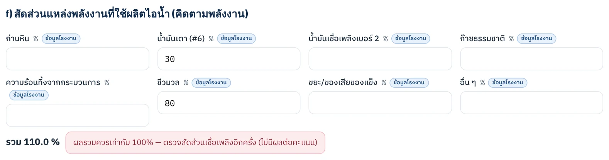
1
2
1
พิมพ์น้ำมันเตาผิดเป็น 30 %
2
รวม 110.0 % → กล่องเตือนสีแดง "ผลรวมควรเท่ากับ 100% — ตรวจสัดส่วนเชื้อเพลิงอีกครั้ง (ไม่มีผลต่อคะแนน)"
เครื่องมือเตือนแต่ไม่ปรับให้เอง — แก้ค่าจนผลรวมเป็น 100 % กล่องเตือนจะหาย
ค่านี้ไม่คิดคะแนน แต่ตัวเลขที่กรอกผิดจะติดไปในตารางข้อมูลพื้นฐานของสรุปผลและรายงาน — พร้อมกล่องเตือน (สไลด์ถัดไป)
⚠️ ระวัง
เห็นกล่องสีแดงใต้ช่องเชื้อเพลิง = ตรวจตัวเลขก่อนบันทึกไฟล์งาน
กล่องเตือนเดียวกันในแท็บสรุปผลและรายงานพิมพ์
คู่มือใช้งาน · ประเมินตนเองระบบไอน้ำ (Steam System Scoping) · ระดับ Free
12 / 35
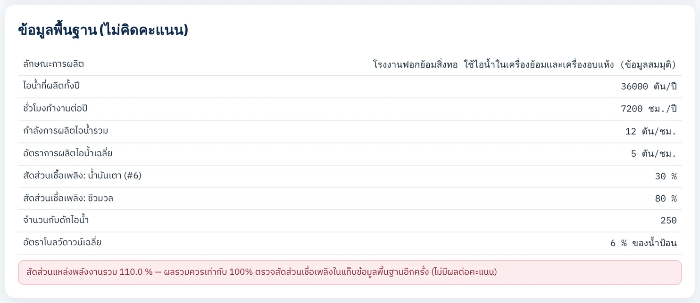
1
2
1
แถวน้ำมันเตาแสดงค่าที่กรอกผิด (30 %)
2
ใต้ตาราง: "สัดส่วนแหล่งพลังงานรวม 110.0 % — ผลรวมควรเท่ากับ 100% …"
การ์ด ข้อมูลพื้นฐาน (ไม่คิดคะแนน) ในแท็บสรุปผลแสดงกล่องเตือนเมื่อผลรวมไม่เท่ากับ 100 %
กล่องนี้พิมพ์ออกไปกับรายงานด้วย — ผู้อ่านรายงานจะเห็นว่าข้อมูลเชื้อเพลิงยังไม่ครบ
คะแนนรวมยังเป็น 175 / 340 — สัดส่วนเชื้อเพลิงไม่มีผลต่อคะแนน
⚠️ ระวัง
แก้ที่แท็บข้อมูลพื้นฐานจนผลรวมเป็น 100 % ก่อนพิมพ์รายงาน — กล่องเตือนทั้งสองจุดจะหายพร้อมกัน
ขั้นที่ 2
วิธีตอบคำถาม: หมวด 1 ต้นทุนไอน้ำ
คู่มือใช้งาน · ประเมินตนเองระบบไอน้ำ (Steam System Scoping) · ระดับ Free
13 / 35
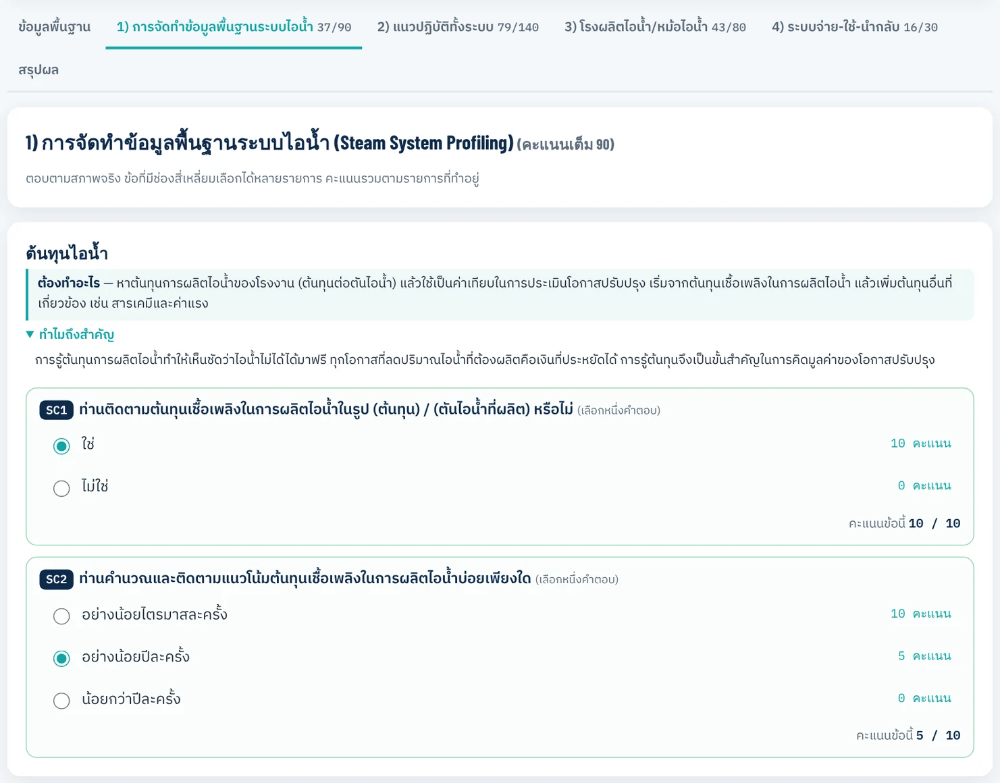
1
2
3
4
5
6
1
แท็บหมวด 1 การจัดทำข้อมูลพื้นฐานระบบไอน้ำ — คะแนน 37/90
2
ต้องทำอะไร — สิ่งที่ต้นฉบับแนะนำ
3
ทำไมถึงสำคัญ — กดเพื่อเปิด/ปิด
4
ป้ายชนิดคำถาม — (เลือกหนึ่งคำตอบ)
5
แตะทั้งแถวเพื่อเลือก · ตัวเลขท้ายแถว = คะแนนของตัวเลือก
6
คะแนนข้อนี้ 10 / 10
แถบสีน้ำเงินเข้มหน้าคำถามคือรหัสข้อ (SC1) — ใช้รหัสเดียวกันในสรุปผล
💡 เคล็ดลับ
ตอบแล้วกล่องคำถามมีกรอบสีเขียว — เลื่อนดูทั้งแท็บ ข้อที่ไม่มีกรอบเขียวคือยังไม่ตอบ
ขั้นที่ 2
ข้อเลือกได้หลายรายการ: MS1 ตัวแปรที่วัดและบันทึก
คู่มือใช้งาน · ประเมินตนเองระบบไอน้ำ (Steam System Scoping) · ระดับ Free
14 / 35
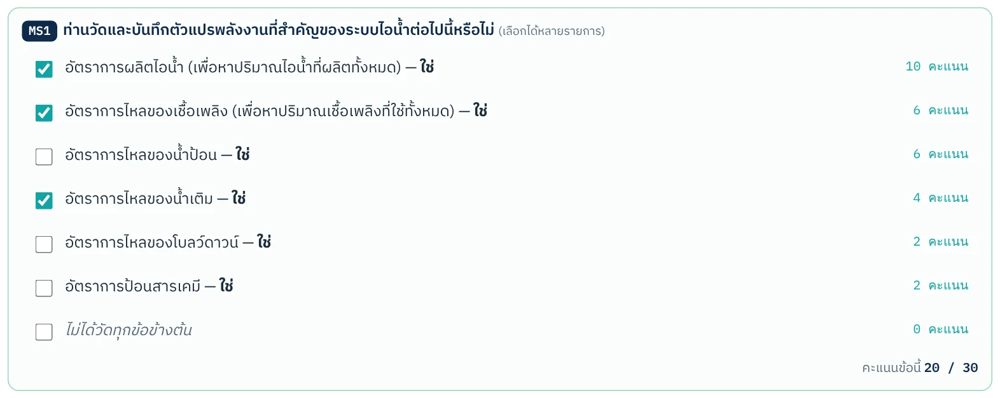
1
2
3
4
5
1
ป้าย (เลือกได้หลายรายการ)
2
ติ๊กรายการที่ทำอยู่จริง เช่น อัตราการผลิตไอน้ำ
3
รายการที่ไม่ได้วัด เว้นไว้ (น้ำป้อน)
4
ไม่ได้วัดทุกข้อข้างต้น — ติ๊กแล้วล้างรายการอื่น
5
คะแนนข้อนี้ = ผลรวม 20 / 30
โรงงาน A วัดอัตราการผลิตไอน้ำ อัตราการไหลของเชื้อเพลิง และน้ำเติม
⚠️ ระวัง
ถ้าไม่ได้ทำเลยสักรายการ ให้ติ๊ก "ไม่ได้…ทุกข้อ" — คะแนนเท่าเดิม (0) แต่สรุปผลนับว่าตอบแล้ว
คำตอบของโรงงาน A — หมวด 1 การจัดทำข้อมูลพื้นฐานระบบไอน้ำ
คู่มือใช้งาน · ประเมินตนเองระบบไอน้ำ (Steam System Scoping) · ระดับ Free
15 / 35
| ข้อ | หัวข้อ | คำตอบของโรงงาน A | คะแนน |
|---|---|---|---|
| SC1 | วัดต้นทุนเชื้อเพลิงในการผลิตไอน้ำ | ใช่ | 10 / 10 |
| SC2 | ติดตามแนวโน้มต้นทุนเชื้อเพลิง | อย่างน้อยปีละครั้ง | 5 / 10 |
| BM1 | วัดค่าเทียบไอน้ำต่อผลิตภัณฑ์ | ไม่ใช่ | 0 / 10 |
| BM2 | ติดตามแนวโน้มค่าเทียบไอน้ำต่อผลิตภัณฑ์ | น้อยกว่าปีละครั้ง | 0 / 10 |
| MS1 | วัดและบันทึกตัวแปรพลังงานที่สำคัญ | ไอน้ำ · เชื้อเพลิง · น้ำเติม | 20 / 30 |
| MS2 | ความละเอียดของการวัดอัตราไหลไอน้ำ | ทั้งโรงงานรวมกัน | 2 / 20 |
| รวมหมวด 1 | 37 / 90 |
💡 เคล็ดลับ
ข้อที่สองของแต่ละหัวข้อมักถาม "บ่อยเพียงใด" — ทำบ้างแต่ไม่สม่ำเสมอได้คะแนนน้อยกว่าทำเป็นประจำ
ขั้นที่ 3
หมวด 2 แนวปฏิบัติทั้งระบบ: เริ่มที่กับดักไอน้ำ
คู่มือใช้งาน · ประเมินตนเองระบบไอน้ำ (Steam System Scoping) · ระดับ Free
16 / 35
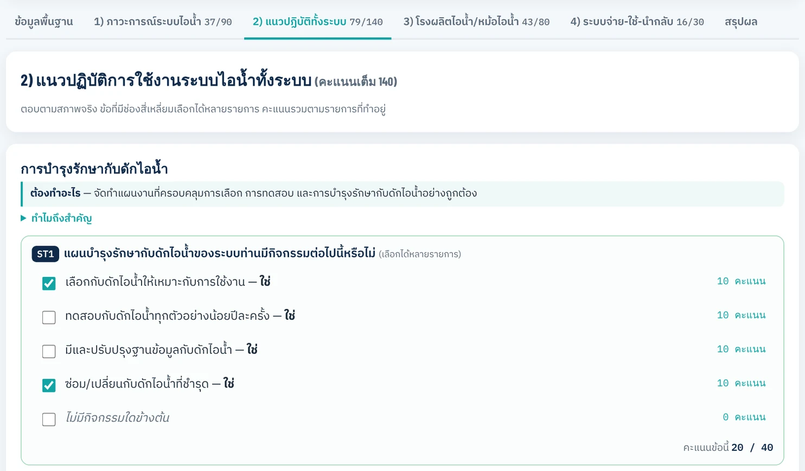
1
2
3
4
5
1
แท็บหมวด 2 — 79/140
2
หัวหมวดและคะแนนเต็ม
3
ST1 ติ๊ก: เลือกกับดักไอน้ำให้เหมาะกับงาน
4
ยังไม่ได้ทดสอบกับดักไอน้ำทุกตัวทุกปี
5
ST1 = 20 / 40
💡 เคล็ดลับ
ST1 เป็นข้อที่คะแนนเต็มสูงที่สุดของแบบประเมิน (40) — แผนบำรุงรักษากับดักไอน้ำมีน้ำหนักมาก
คำตอบของโรงงาน A — หมวด 2 แนวปฏิบัติทั้งระบบ
คู่มือใช้งาน · ประเมินตนเองระบบไอน้ำ (Steam System Scoping) · ระดับ Free
17 / 35
| ข้อ | หัวข้อ | คำตอบของโรงงาน A | คะแนน |
|---|---|---|---|
| ST1 | แนวปฏิบัติการบำรุงรักษากับดักไอน้ำ | เลือกให้เหมาะ · ซ่อม/เปลี่ยนตัวที่ชำรุด | 20 / 40 |
| WT1 | ปรับสภาพน้ำ – ตรวจการทำงาน | อย่างน้อยวันละครั้ง | 10 / 10 |
| WT2 | การล้างคราบด้านไฟ/ด้านน้ำ | ทุก 1–5 ปี | 5 / 10 |
| WT3 | วัด TDS และกำหนดอัตราโบลว์ดาวน์ | วันละครั้ง | 5 / 10 |
| IN1 | ฉนวน – โรงผลิตไอน้ำ | ฉนวนดี แต่ยังปรับปรุงได้ | 7 / 10 |
| IN2 | ฉนวน – ระบบจ่าย/ปลายทาง/นำกลับ | ฉนวนดี แต่ยังปรับปรุงได้ | 14 / 20 |
| LK1 | ไอน้ำรั่ว – ความรุนแรง | ปานกลาง | 3 / 10 |
| WH1 | Water Hammer – ความถี่ | รายเดือนหรือรายสัปดาห์ | 5 / 10 |
| MN1 | ตรวจอุปกรณ์สำคัญของระบบไอน้ำ | โรงผลิตไอน้ำ · ระบบจ่ายไอน้ำ | 10 / 20 |
| รวมหมวด 2 | 79 / 140 |
ขั้นที่ 4
หมวด 3 โรงผลิตไอน้ำ/หม้อไอน้ำ
คู่มือใช้งาน · ประเมินตนเองระบบไอน้ำ (Steam System Scoping) · ระดับ Free
18 / 35
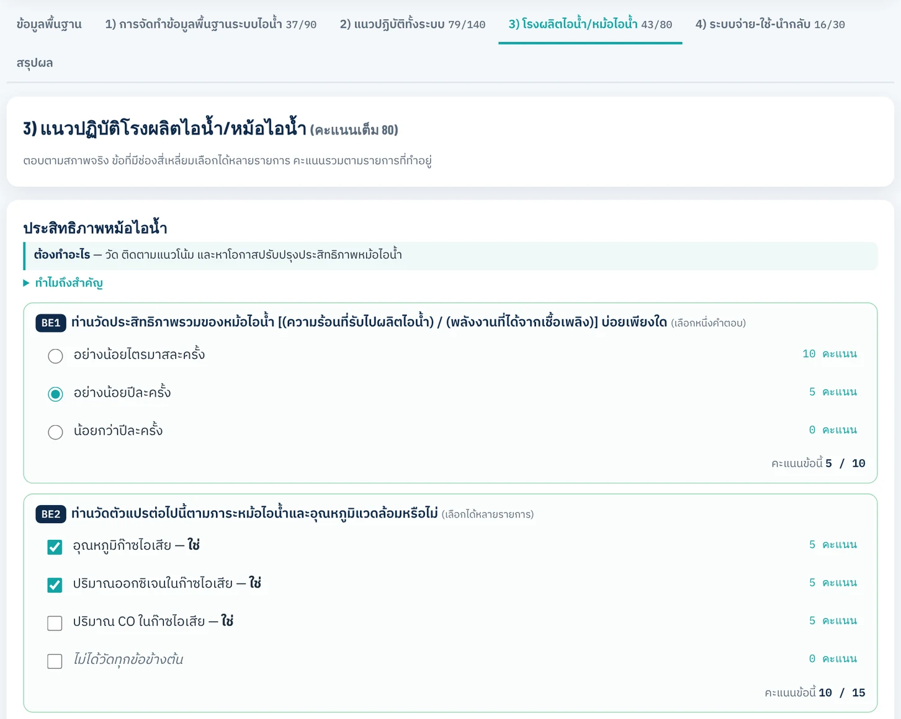
1
2
3
4
1
แท็บหมวด 3 — 43/80
2
BE1 วัดประสิทธิภาพปีละครั้ง = 5 / 10
3
BE2 ยังไม่ได้วัด CO ในก๊าซไอเสีย
4
BE2 = 10 / 15
💡 เคล็ดลับ
BE1–BE3 ต่อด้วยลิงก์เครื่องมือประสิทธิภาพหม้อไอน้ำในหน้าสรุปผล เมื่อเสียคะแนนข้อนั้น
คำตอบของโรงงาน A — หมวด 3 โรงผลิตไอน้ำ/หม้อไอน้ำ
คู่มือใช้งาน · ประเมินตนเองระบบไอน้ำ (Steam System Scoping) · ระดับ Free
19 / 35
| ข้อ | หัวข้อ | คำตอบของโรงงาน A | คะแนน |
|---|---|---|---|
| BE1 | ความถี่ในการวัดประสิทธิภาพหม้อไอน้ำ | อย่างน้อยปีละครั้ง | 5 / 10 |
| BE2 | วัดอุณหภูมิ O₂ และ CO ของก๊าซไอเสีย | อุณหภูมิ · O₂ | 10 / 15 |
| BE3 | การควบคุมอากาศส่วนเกิน | ปรับด้วยมือ | 5 / 10 |
| HR1 | อุปกรณ์นำความร้อนกลับของหม้อไอน้ำ | อีโคโนไมเซอร์/เครื่องอุ่นอากาศ | 10 / 15 |
| DS1 | ตรวจคุณภาพไอน้ำจากหม้อไอน้ำ | น้อยกว่าปีละครั้ง | 0 / 10 |
| GB1 | การควบคุมโบลว์ดาวน์อัตโนมัติ | ไม่มี | 0 / 5 |
| GB2 | ความถี่ของสัญญาณเตือนระดับน้ำ | น้อยกว่า 1 ครั้งต่อเดือน | 10 / 10 |
| GB3 | ความถี่ของความดันไอน้ำแกว่ง | 1–5 ครั้งต่อเดือน | 3 / 5 |
| รวมหมวด 3 | 43 / 80 |
ขั้นที่ 5
หมวด 4 ระบบจ่าย-ใช้-นำกลับ
คู่มือใช้งาน · ประเมินตนเองระบบไอน้ำ (Steam System Scoping) · ระดับ Free
20 / 35
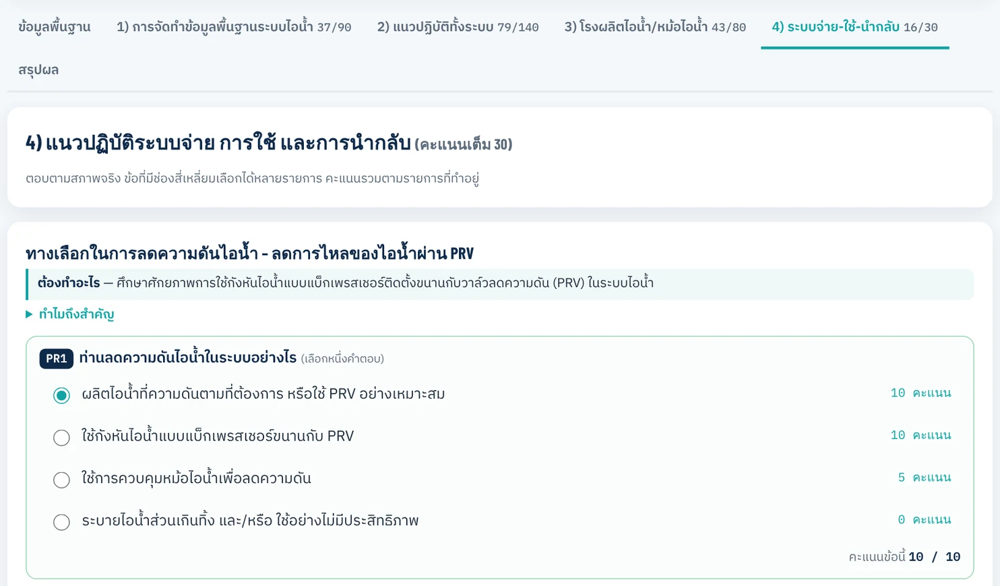
1
2
3
4
5
1
แท็บหมวด 4 — 16/30
2
หัวข้อ: ทางเลือกในการลดความดันไอน้ำ
3
PR1 ผลิตไอน้ำที่ความดันตามต้องการ/ใช้ PRV อย่างเหมาะสม
4
สองตัวเลือกบนได้คะแนนเต็มเท่ากัน
5
PR1 = 10 / 10
หมวดนี้มี 3 ข้อ: PR1 ลดความดัน · CR1 คอนเดนเสทกลับ · FS1 ไอน้ำแฟลช
⚠️ ระวัง
CR1 และ FS1 ตอบเป็นช่วงร้อยละ — ประมาณจากข้อมูลจริง เช่น น้ำเติมเทียบกับไอน้ำที่ผลิต ไม่ใช่เดา
คำตอบของโรงงาน A — หมวด 4 และคะแนนรวม
คู่มือใช้งาน · ประเมินตนเองระบบไอน้ำ (Steam System Scoping) · ระดับ Free
21 / 35
| ข้อ | หัวข้อ | คำตอบของโรงงาน A | คะแนน |
|---|---|---|---|
| PR1 | ทางเลือกในการลดความดันไอน้ำ | ผลิตที่ความดันตามต้องการ/ใช้ PRV เหมาะสม | 10 / 10 |
| CR1 | การนำคอนเดนเสทกลับมาใช้ | 40% ถึง 80% | 6 / 10 |
| FS1 | การนำไอน้ำแฟลชกลับมาใช้ | น้อยกว่า 20% | 0 / 10 |
| รวมหมวด 4 | 16 / 30 | ||
| คะแนนรวม 4 หมวด | ตอบแล้ว 26 / 26 ข้อ | 175 / 340 |
หัวหน้าจอแสดง คะแนนรวม 175 / 340 · 51.5% ตรงกับแท็บสรุปผล
✓ ผ่าน
ตอบครบ 26 ข้อ ได้ 175 คะแนน — ไปแท็บ สรุปผล เพื่ออ่านผลรายหมวดและจุดที่ควรปรับปรุง
ขั้นที่ 6
อ่านสรุปผล: คะแนนรวมและรายหมวด
คู่มือใช้งาน · ประเมินตนเองระบบไอน้ำ (Steam System Scoping) · ระดับ Free
22 / 35
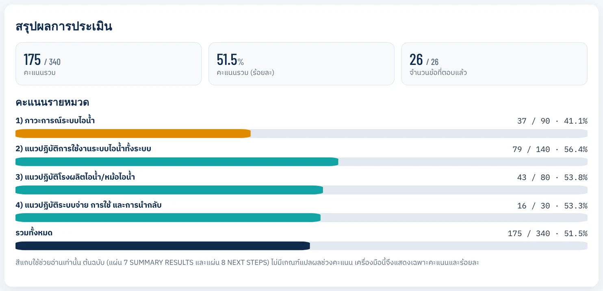
1
2
3
4
5
6
1
คะแนนรวม 175 / 340
2
ร้อยละ 51.5 %
3
ตอบแล้ว 26 / 26 ข้อ
4
หมวด 1 = 37/90 · 41.1 % (ต่ำสุด)
5
หมวด 4 = 16/30 · 53.3 %
6
หมายเหตุ: ต้นฉบับไม่มีเกณฑ์แปลผลช่วงคะแนน
หมวด 2 = 79/140 · 56.4 % · หมวด 3 = 43/80 · 53.8 %
โรงงาน A อ่อนที่สุดในหมวด 1 การจัดทำข้อมูลพื้นฐานระบบไอน้ำ — ยังไม่มีค่าเทียบไอน้ำต่อผลิตภัณฑ์ และวัดไอน้ำรวมทั้งโรงงานเท่านั้น
⚠️ ระวัง
อย่าแปลร้อยละเป็น "ผ่าน/ไม่ผ่าน" — ใช้เทียบกับตัวเองในปีถัดไปและดูว่าหมวดไหนอ่อนที่สุด
จุดที่ควรปรับปรุงก่อน
คู่มือใช้งาน · ประเมินตนเองระบบไอน้ำ (Steam System Scoping) · ระดับ Free
23 / 35
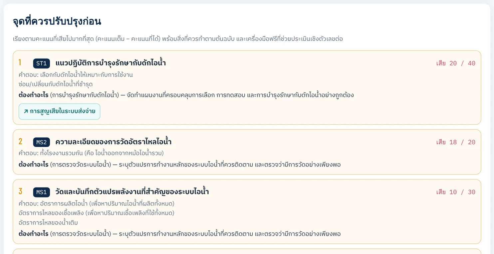
1
2
3
4
1
อันดับ 1: ST1 (กรอบสีส้ม = 5 อันดับแรก)
2
เสีย 20 คะแนน = คะแนนเต็ม − คะแนนที่ได้
3
ต้องทำอะไร ของหัวข้อนั้น — ทุกอันดับอยู่ใต้บรรทัดคำตอบที่เลือกไว้
4
ลิงก์เครื่องมือ Free สำหรับประเมินเชิงตัวเลขต่อ
เรียงตามคะแนนที่เสียมากก่อน · เสียเท่ากันเรียงข้อที่คะแนนเต็มมากกว่าก่อน แล้วตามลำดับข้อ
โรงงาน A มีข้อที่เสียคะแนน 22 ข้อ — ตั้งแต่อันดับ 6 กรอบเป็นสีปกติ
💡 เคล็ดลับ
อันดับนี้คือ "คะแนนที่หายไป" ไม่ใช่ "พลังงานที่ประหยัดได้" — ข้อที่คะแนนหายมากอาจไม่ใช่ข้อที่คุ้มทุนที่สุด
อ่านผลโรงงาน A: 5 อันดับแรกที่ควรปรับปรุง
คู่มือใช้งาน · ประเมินตนเองระบบไอน้ำ (Steam System Scoping) · ระดับ Free
24 / 35
| อันดับ | ข้อ | เสีย (คะแนน) | สิ่งที่โรงงาน A ควรทำต่อ |
|---|---|---|---|
| 1 | ST1 | 20 | เพิ่มการทดสอบกับดักไอน้ำทุกตัวปีละครั้ง และทำฐานข้อมูลกับดักไอน้ำ 250 ตัว |
| 2 | MS2 | 18 | ติดมาตรวัดไอน้ำแยกตามกระบวนการ/ผู้ใช้หลัก (เครื่องย้อม เครื่องอบแห้ง) |
| 3 | MS1 | 10 | เพิ่มการวัดอัตราน้ำป้อน โบลว์ดาวน์ และสารเคมี |
| 4 | MN1 | 10 | ตรวจอุปกรณ์ปลายทางและระบบนำคอนเดนเสทกลับอย่างน้อยปีละครั้ง |
| 5 | BM1 | 10 | เริ่มวัด kg ไอน้ำต่อหน่วยผลิตภัณฑ์ แล้วติดตามแนวโน้ม (ต่อด้วย BM2) |
ข้อที่มีลิงก์เครื่องมือ (เช่น ST1 → การสูญเสียในระบบส่งจ่าย) ใช้คิดผลประหยัดเป็นตัวเลขก่อนลงทุน
💡 เคล็ดลับ
ใช้รายการนี้ตั้งแผนปรับปรุงประจำปี แล้วตอบแบบประเมินซ้ำปีถัดไปเพื่อดูว่าคะแนนขึ้นจริง
คะแนนรายข้อ (ตารางในสรุปผล)
คู่มือใช้งาน · ประเมินตนเองระบบไอน้ำ (Steam System Scoping) · ระดับ Free
25 / 35
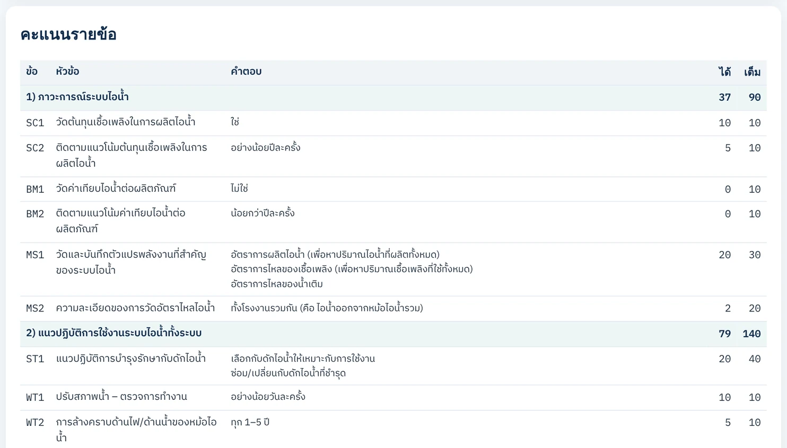
1
2
1
แถวสีฟ้า = รวมหมวด (ได้/เต็ม)
2
MS1 ได้ 20 — คำตอบหลายรายการแสดงทีละบรรทัด
แถวสุดท้ายของตาราง (สีน้ำเงินเข้ม) = คะแนนรวม 175 / 340
ตารางนี้เรียงตามลำดับข้อ ใช้ทวนคำตอบทั้ง 26 ข้อในหน้าเดียว และพิมพ์อยู่ในรายงาน
ใต้ตารางมีการ์ด ข้อมูลพื้นฐาน (ไม่คิดคะแนน) แสดงเฉพาะช่องที่กรอก
💡 เคล็ดลับ
เห็นคำตอบผิดในตาราง กลับไปแก้ที่แท็บหมวดนั้น — ตารางและคะแนนเปลี่ยนทันที
ลองเปลี่ยนคำตอบ (What-if): คะแนนเปลี่ยนเท่าไร
คู่มือใช้งาน · ประเมินตนเองระบบไอน้ำ (Steam System Scoping) · ระดับ Free
26 / 35
| เปลี่ยนจากเคสโรงงาน A | หมวดที่เปลี่ยน | คะแนนรวม | ร้อยละ |
|---|---|---|---|
| เคสโรงงาน A (ตอบครบ) | — | 175 | 51.5 % |
| MS2 วัดไอน้ำแยกตามผู้ใช้/อุปกรณ์หลัก | หมวด 1 = 55 | 193 | 56.8 % |
| ST1 แผนกับดักไอน้ำครบ 4 กิจกรรม | หมวด 2 = 99 | 195 | 57.4 % |
| CR1 คอนเดนเสทกลับมากกว่า 80% | หมวด 4 = 20 | 179 | 52.6 % |
| MS1 ติ๊ก "ไม่ได้วัดทุกข้อข้างต้น" | หมวด 1 = 17 | 155 | 45.6 % |
| ลืมตอบ LK1 และ BE3 (ตอบ 24 ข้อ) | หมวด 2 = 76 · 3 = 38 | 167 | 49.1 % |
| กดปุ่ม ใส่ตัวอย่าง (ข้อมูลสมมุติ) → ตอบยืนยัน | แทนคำตอบและข้อมูลพื้นฐานทั้งหมด | 168 | 49.4 % |
ทำเอง: เปลี่ยนคำตอบหนึ่งข้อแล้วดูหัวหน้าจอ — คะแนนเปลี่ยนเท่ากับผลต่างคะแนนของตัวเลือก
ข้อที่ลืมตอบทำให้คะแนนต่ำกว่าความจริง — สรุปผลจะแจ้งจำนวนข้อที่ยังไม่ตอบ
ปุ่มใส่ตัวอย่างถาม "แทนที่คำตอบและข้อมูลพื้นฐานปัจจุบันด้วยตัวอย่าง?" แล้วล้างข้อมูลพื้นฐานทุกช่องก่อน (รวมวันที่) — เชื้อเพลิงรวมของตัวอย่าง = 100.0 %
⚠️ ระวัง
กดยกเลิกในกล่องยืนยัน = ทุกอย่างคงเดิม · ปุ่มล้างคำตอบทั้งหมดลบเฉพาะคำตอบ — บันทึก JSON ไว้ก่อนกดทั้งสองปุ่ม
บันทึกไฟล์งาน และกรณีคำตอบหาย
คู่มือใช้งาน · ประเมินตนเองระบบไอน้ำ (Steam System Scoping) · ระดับ Free
27 / 35
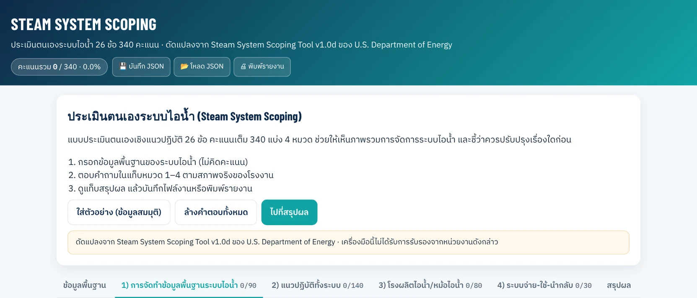
1
2
1
หลังกด ล้างคำตอบทั้งหมด: คะแนนรวม 0
2
ทุกแท็บหมวดกลับเป็น 0 (หมวด 1 = 0)
กด 💾 บันทึก JSON ทุกครั้งก่อนปิดหน้า — ได้ไฟล์ Tool_Steam_System_Scoping_<วันที่>.json
ไฟล์เก็บทุกช่อง: ข้อมูลพื้นฐาน + คำตอบทั้ง 26 ข้อ
ปุ่มล้างคำตอบไม่ลบข้อมูลพื้นฐาน (ไอน้ำทั้งปียังเป็น 36000)
⚠️ ระวัง
ปิดหน้าหรือรีเฟรชโดยไม่บันทึก คำตอบหายหมด — เครื่องมือเตือนก่อนออกจากหน้า แต่ไม่บันทึกให้เอง
เปิดไฟล์งานที่บันทึกไว้ (โหลด JSON)
คู่มือใช้งาน · ประเมินตนเองระบบไอน้ำ (Steam System Scoping) · ระดับ Free
28 / 35
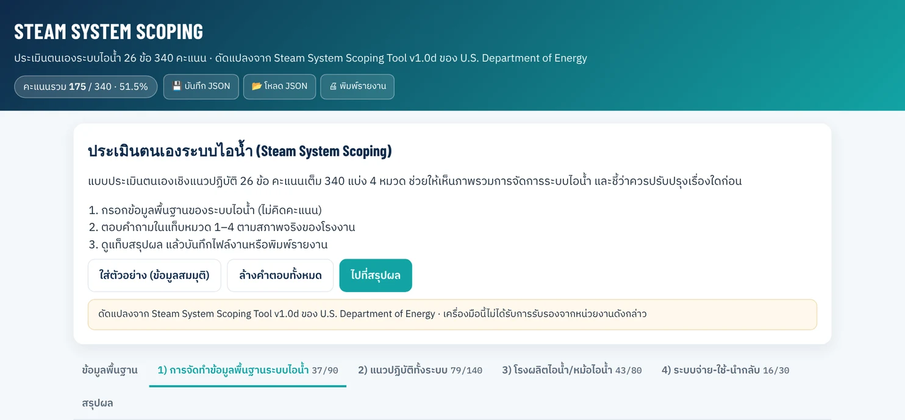
1
2
3
1
กด 📂 โหลด JSON แล้วเลือกไฟล์ของโรงงาน A
2
คะแนนรวมกลับมา 175 / 340 · 51.5%
3
คะแนนรายแท็บกลับมา (หมวด 2 = 79)
ตอบแล้ว 26 / 26 ข้อ — เหมือนตอนบันทึกทุกช่อง
ไฟล์เดียวกันเปิดได้ทั้งโหมดไทยและ EN · ใช้ทำแบบประเมินซ้ำปีถัดไป: โหลดไฟล์ปีก่อน แก้เฉพาะข้อที่เปลี่ยน แล้วบันทึกเป็นไฟล์ใหม่
💡 เคล็ดลับ
ตั้งชื่อไฟล์ให้มีปี เช่น SteamScoping_โรงงานA_2569.json — เทียบคะแนนรายปีได้ง่าย
พิมพ์รายงาน
คู่มือใช้งาน · ประเมินตนเองระบบไอน้ำ (Steam System Scoping) · ระดับ Free
29 / 35
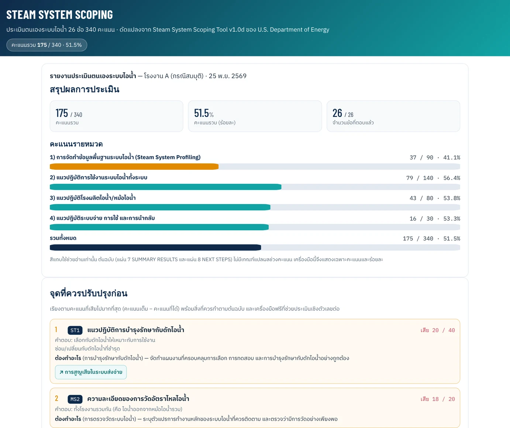
กด 🖨 พิมพ์รายงาน → เลือก "บันทึกเป็น PDF" ได้
รายงานมีเฉพาะแท็บสรุปผล: หัวรายงานพร้อมชื่องานและวันที่ · คะแนนรายหมวด · จุดที่ควรปรับปรุง · คะแนนรายข้อ · ข้อมูลพื้นฐาน · ขั้นต่อไป
ปุ่ม แท็บ และการ์ดแนะนำไม่ถูกพิมพ์
หัวรายงานแสดงวันที่แบบไทย 25 พ.ย. 2569 (ช่องวันที่และไฟล์งานยังเก็บแบบ ปี-เดือน-วัน ค.ศ.)
ภาพนี้แสดงส่วนต้นของรายงาน (จัดหน้าตามกฎการพิมพ์ของเครื่องมือ)
💡 เคล็ดลับ
กรอก ชื่องาน/สถานที่ และ วันที่ ในข้อมูลพื้นฐานก่อนพิมพ์ — จะขึ้นที่หัวรายงาน
ข้อผิดพลาดที่พบบ่อย
คู่มือใช้งาน · ประเมินตนเองระบบไอน้ำ (Steam System Scoping) · ระดับ Free
30 / 35
✗ ตอบตามที่ตั้งใจจะทำ
✓ ตอบสิ่งที่ทำอยู่จริงและมีหลักฐาน
✗ ลืมตอบบางข้อ
✓ ข้อที่ไม่ตอบ = 0 คะแนน ดูจำนวนข้อที่ตอบในสรุปผล
✗ ไม่ติ๊กข้อหลายรายการเลย
✓ ไม่ได้ทำสักรายการ ให้ติ๊ก "ไม่ได้…ทุกข้อ"
✗ แปลร้อยละเป็นผ่าน/ไม่ผ่าน
✓ เครื่องมือไม่มีเกณฑ์ — ใช้เทียบกับตัวเองรายปี
✗ ถือว่าเป็นผลตรวจวัด
✓ เป็นการประเมินตนเอง — ต้องวัดจริงก่อนลงทุน
✗ กดใส่ตัวอย่างทับงานจริง
✓ แทนทั้งคำตอบและข้อมูลพื้นฐาน — บันทึก JSON ก่อน
✗ สัดส่วนเชื้อเพลิงไม่ครบ 100 %
✓ แก้จนกล่องเตือนสีแดงหายไป
✗ ปิดหน้าโดยไม่บันทึก
✓ คำตอบหายหมด — บันทึก JSON ทุกครั้ง
แบบฝึกหัด: โรงงาน A หลังปรับปรุง 1 ปี
คู่มือใช้งาน · ประเมินตนเองระบบไอน้ำ (Steam System Scoping) · ระดับ Free
31 / 35
| ข้อ | คำตอบใหม่ |
|---|---|
| BM1 | ใช่ (เริ่มวัดค่าเทียบไอน้ำ) |
| BM2 | อย่างน้อยไตรมาสละครั้ง |
| ST1 | ติ๊กครบ 4 กิจกรรม |
| DS1 | อย่างน้อยปีละครั้ง |
| GB1 | มี (โบลว์ดาวน์อัตโนมัติ) |
| FS1 | 40% ถึง 80% |
คำถาม — กรอกแล้วตอบ
1
โหลดไฟล์งานโรงงาน A แล้วแก้เฉพาะ 6 ข้อนี้
2
หมวด 1 = ____ · หมวด 2 = ____
3
หมวด 3 = ____ · หมวด 4 = ____
4
คะแนนรวม = ____ / 340 (____ %)
5
อันดับ 1 ของจุดที่ควรปรับปรุงคือข้อ ____
💡 เคล็ดลับ
ข้ออื่นตอบเหมือนเคสโรงงาน A ทุกข้อ — ตรวจที่ตารางคะแนนรายข้อก่อนอ่านผล
เฉลยแบบฝึกหัด
คู่มือใช้งาน · ประเมินตนเองระบบไอน้ำ (Steam System Scoping) · ระดับ Free
32 / 35
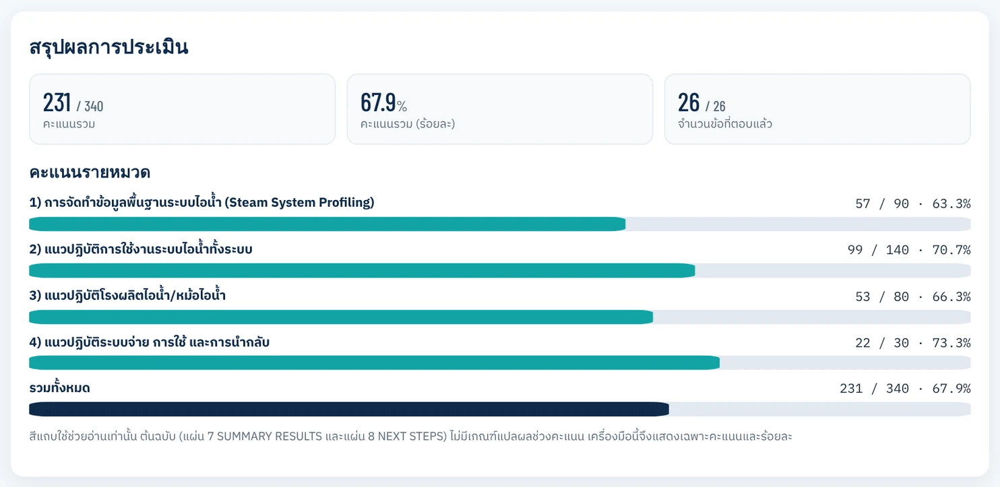
หมวด 1 = 57/90 (63.3 %) · หมวด 2 = 99/140 (70.7 %)
หมวด 3 = 53/80 (66.3 %) · หมวด 4 = 22/30 (73.3 %)
คะแนนรวม 231 / 340 (67.9 %) — เดิม 175 (51.5 %)
อันดับ 1 ใหม่: MS2 เสีย 18 · ข้อที่ยังเสียคะแนน 18 ข้อ (เดิม 22)
✓ ผ่าน
ได้ตัวเลขตรงกัน = ใช้เครื่องมือเป็นแล้ว · ST1 หลุดจากอันดับ 1 เพราะทำครบทุกกิจกรรม
ขั้นต่อไป: เอกสารที่เครื่องมือแนะนำ
คู่มือใช้งาน · ประเมินตนเองระบบไอน้ำ (Steam System Scoping) · ระดับ Free
33 / 35
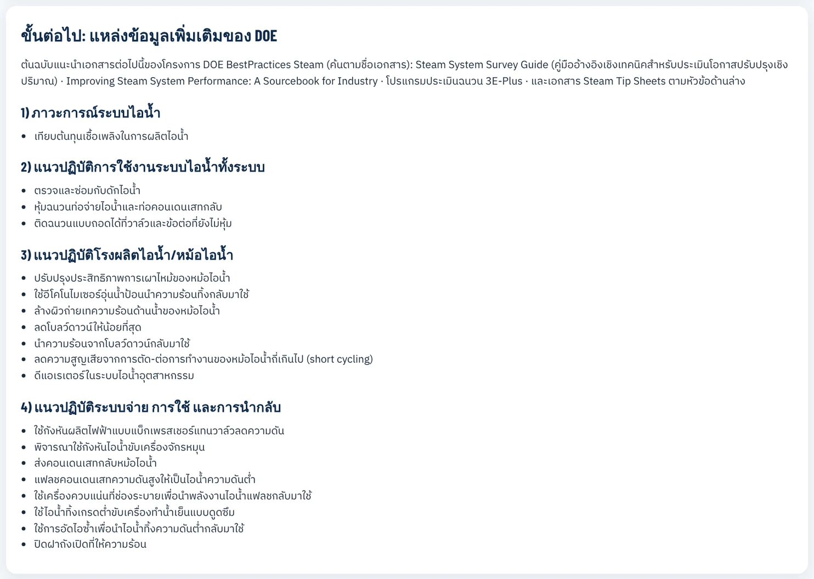
1
2
3
4
5
1
เอกสาร DOE BestPractices Steam ที่ต้นฉบับแนะนำ (ค้นตามชื่อเอกสาร)
2
Steam Tip Sheet หมวด 1
3
หมวด 2: กับดักไอน้ำ · ฉนวน
4
หมวด 3: หม้อไอน้ำ
5
หมวด 4: ระบบจ่าย-ใช้-นำกลับ
💡 เคล็ดลับ
อ่าน Tip Sheet ของหมวดที่คะแนนต่ำก่อน แล้วใช้เครื่องมือ Free ที่ลิงก์ไว้คิดเป็นตัวเลข
แหล่งอ้างอิงที่ใช้ในคู่มือนี้ (ตามที่เครื่องมือระบุ)
คู่มือใช้งาน · ประเมินตนเองระบบไอน้ำ (Steam System Scoping) · ระดับ Free
34 / 35
| เรื่อง | เอกสาร/ที่มา | หมายเหตุ |
|---|---|---|
| คำถาม ตัวเลือก คะแนน | Steam System Scoping Tool v1.0d — U.S. Department of Energy | เครื่องมือดัดแปลง · ไม่ได้รับการรับรองจาก DOE |
| ชื่อหมวด 1 · ข้อ f "คิดตามพลังงาน" | U.S. DOE, Steam System Tool Suite Introduction Guide (6 ต.ค. 2009) หน้า SSST-8 "STEAM SYSTEM PROFILING" · SSST-33–35 · SSST-5 ข้อ f | ที่มาของชื่อหมวดในเครื่องมือฉบับแก้ |
| ไม่มีเกณฑ์แปลผล | ต้นฉบับแผ่น 7 SUMMARY RESULTS · แผ่น 8 NEXT STEPS | ตามหมายเหตุในแท็บสรุปผล |
| เอกสารอ่านต่อ | Steam System Survey Guide · Improving Steam System Performance: A Sourcebook for Industry | DOE BestPractices Steam |
| เครื่องมือ/เอกสารอ่านต่อ | โปรแกรมประเมินฉนวน 3E-Plus · Steam Tip Sheets | ค้นตามชื่อเอกสาร |
| ประเมินเชิงตัวเลขต่อ | เครื่องมือ Free ที่ลิงก์ในจุดที่ควรปรับปรุง | tripleeenergytools.com |
⚠️ ระวัง
คู่มือนี้ไม่ได้เพิ่มเกณฑ์หรือมาตรฐานอื่น — คะแนนทั้งหมดเป็นของต้นฉบับตามที่เครื่องมือแสดง
สรุป 1 หน้า (พิมพ์ติดไว้ข้างคอมพิวเตอร์)
คู่มือใช้งาน · ประเมินตนเองระบบไอน้ำ (Steam System Scoping) · ระดับ Free
35 / 35
1
ข้อมูลพื้นฐาน
ไอน้ำทั้งปี · ชั่วโมง · เชื้อเพลิงรวม 100 %
2
หมวด 1
ต้นทุนไอน้ำ · ค่าเทียบไอน้ำต่อผลิตภัณฑ์ · การวัด
3
หมวด 2
กับดักไอน้ำ · น้ำ · ฉนวน · รั่ว · ค้อนน้ำ
4
หมวด 3
ประสิทธิภาพ · นำความร้อนกลับ · ไอน้ำแห้ง
5
หมวด 4
ลดความดัน · คอนเดนเสทกลับ · ไอน้ำแฟลช
6
สรุปผล
จุดที่ควรปรับปรุงก่อน → บันทึก JSON
อ่านผลแล้วตรวจ
☐
ตอบตามที่ทำจริง
☐
ตอบครบทุกข้อ
☐
ข้อหลายรายการ: ติ๊ก "ไม่ได้…" ถ้าไม่ได้ทำ
☐
ไม่มีเกณฑ์ผ่าน/ไม่ผ่าน
☐
ไม่ใช่ผลตรวจวัด
☐
บันทึก JSON ทุกครั้ง
อ.หนึ่ง กลับทวี / Aj. Nueng Klubtavee
tripleeenergytools.com
tripleeenergytools.com